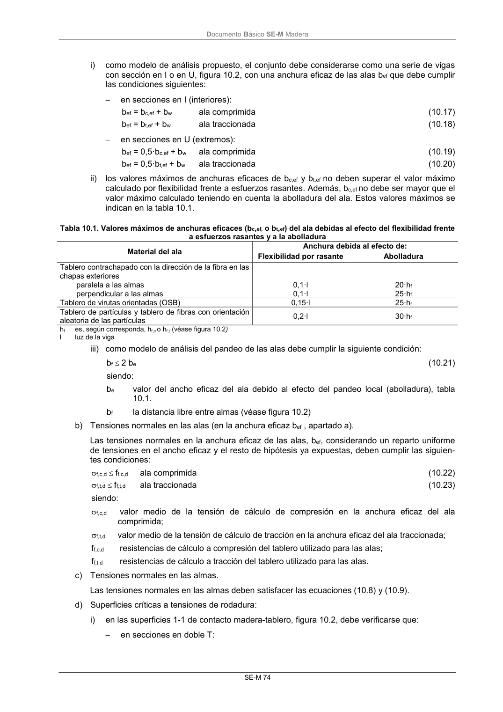

DB-SE-M · 10.1.1.3 Vigas cajón con alas encoladas a tablero · versión 2019-12-20 · capa oficial
Formatos: JSON compacto · Markdown · PDF fuente
Ámbito del documento · texto del ámbito · documento y tablas
ID técnico a0138 · PDF pág. 79-81 · jerarquía no validada por persona · contrastado con el literal de la página 79 (candidato tipográfico); no validado por persona · padre: raíz
10.1.1.3 Vigas cajón con alas encoladas a tablero 1 Este tipo de vigas están formadas por almas de madera aserrada, madera laminada encolada o mi- crolaminada y alas de tableros. 2 Para el cálculo se descomponen en secciones eficaces en I (doble T) y en U (véase figura 10.2). 3 Debe tenerse en consideración la distribución no uniforme de tensiones normales en las alas debi- das al retraso por cortante y a la abolladura. A tal fin se considerará, según se expone más adelante, un ancho eficaz o equivalente del tablero (bef). Figura 10.2 Viga cajón de alas delgadas a) Anchura eficaz de las alas bef: DocumentoBásico SE-M Madera SE-M 74 i) como modelo de análisis propuesto, el conjunto debe considerarse como una serie de vigas con sección en I o en U, figura 10.2, con una anchura eficaz de las alas bef que debe cumplir las condiciones siguientes: en secciones en I (interiores): bef = bc,ef + bw ala comprimida (10.17) bef = bt,ef + bw ala traccionada (10.18) en secciones en U (extremos): bef = 0,5·bc,ef + bw ala comprimida (10.19) bef = 0,5·bt,ef + bw ala traccionada (10.20) ii) los valores máximos de anchuras eficaces de bc,ef y bt,ef no deben superar el valor máximo calculado por flexibilidad frente a esfuerzos rasantes. Además, bc,ef no debe ser mayor que el valor máximo calculado teniendo en cuenta la abolladura del ala. Estos valores máximos se indican en la tabla 10.1. Tabla 10.1. Valores máximos de anchuras eficaces (bc,ef, o bt,ef) del ala debidas al efecto del flexibilidad frente a esfuerzos rasantes y a la abolladura Material del ala Anchura debida al efecto de: Flexibilidad por rasante Abolladura Tablero contrachapado con la dirección de la fibra en las chapas exteriores paralela a las almas 0,1·l 20·hf perpendicular a las almas 0,1·l 25·hf Tablero de virutas orientadas (OSB) 0,15·l 25·hf Tablero de partículas y tablero de fibras con orientación aleatoria de las partículas 0,2·l 30·hf hf es, según corresponda, hf,c o hf,t (véase figura 10.2) l luz de la viga iii) como modelo de análisis del pandeo de las alas debe cumplir la siguiente condición: bf 2 be (10.21) siendo: be valor del ancho eficaz del ala debido al efecto del pandeo local (abolladura), tabla 10.1. bf la distancia libre entre almas (véase figura 10.2) b) Tensiones normales en las alas (en la anchura eficaz bef , apartado a). Las tensiones normales en la anchura eficaz de las alas, bef, considerando un reparto uniforme de tensiones en el ancho eficaz y el resto de hipótesis ya expuestas, deben cumplir las siguien- tes condiciones: f,c,d ff,c,d ala comprimida (10.22) f,t,d ff,t,d ala traccionada (10.23) siendo: f,c,d valor medio de la tensión de cálculo de compresión en la anchura eficaz del ala comprimida; f,t,d valor medio de la tensión de cálculo de tracción en la anchura eficaz del ala traccionada; ff,c,d resistencias de cálculo a compresión del tablero utilizado para las alas; ff,t,d resistencias de cálculo a tracción del tablero utilizado para las alas. c) Tensiones normales en las almas. Las tensiones normales en las almas deben satisfacer las ecuaciones (10.8) y (10.9). d) Superficies críticas a tensiones de rodadura: i) en las superficies 1-1 de contacto madera-tablero, figura 10.2, debe verificarse que: en secciones en doble T: DocumentoBásico SE-M Madera SE-M 75 f w 8 , 0 w f d , 90 , v f w d , 90 , v d , medio h· 8 b para b h· 8 · f h· 8 b para f (10.24) (10.25) siendo: medio,d tensión tangencial de cálculo en la superficie de contacto tablero-madera calculada admitiendo una distribución uniforme de las tensiones tangenciales; fv,90,d (=fv,r,p,d) resistencia de cálculo a cortante de rodadura; hf es, según corresponda, hf,c o hf,t. en secciones en U: f w 8, 0 w f d, 90 ,v f w d, 90 ,v d, medio h· 4 b para b h· 4 · f h· 4 b para f (10.26) (10.27) e) Condición de los empalmes. Cuando sea necesario realizar empalmes debe verificarse que tienen la resistencia suficiente.


PDF fuente redistribuible: copia fiel enlazada en esta página (SHA256 verificado).